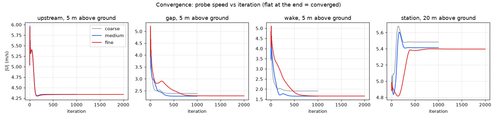

West wind 5 m/s @ 10 m, steady RANS k-ε (simpleFoam). The 3 meshes differ only in the cell size inside a 185 × 117 × 48 m box around the DLR weather-station building (4 → 2 → 1 m, ratio 2).
| Mesh | Box cells | Total cells | Max skewness (bad faces) | Non-ortho max / avg | Max aspect ratio | Failed checks |
|---|---|---|---|---|---|---|
| coarse | 4 m | 1,190,168 | 8.61 (5) | 64.6° / 10.6° | 11.5 | 1 |
| medium | 2 m | 1,275,741 | 8.61 (5) | 64.6° / 10.3° | 11.5 | 1 |
| fine | 1 m | 2,069,906 | 8.61 (7) | 64.6° / 8.4° | 11.5 | 1 |
Usual limits: skewness < 4, non-orthogonality < 70°, no negative volumes. `checkMesh -writeSets` saved the bad faces to `<case>/postProcessing` / `constant/polyMesh/sets` so you can see where they are.
| Mesh | Iterations | Final residuals Ux / p / k | Continuity error (sum local) | Max probe drift, last 100 it | Wall time |
|---|---|---|---|---|---|
| coarse | 1000 | 2e-09 / 3e-06 / 1e-07 | 3e-11 | 0.00 % | 1.4 h |
| medium | 1000 | 2e-06 / 8e-04 / 1e-04 | 2e-08 | 0.00 % | 0.8 h |
| fine | 2000 | 5e-09 / 6e-06 / 5e-08 | 8e-11 | 0.00 % | 1.3 h |
Residuals say how unbalanced the equations still are; the probe drift says whether the answer still moves. Under ~0.5 % = converged.
| Probe (height above ground) | coarse | medium | fine | coarse→medium | medium→fine | GCI fine |
|---|---|---|---|---|---|---|
| upstream 10 m | 4.98 | 4.98 | 4.98 | -0.0 % | -0.0 % | 0.0 % |
| gap 5 m | 2.39 | 2.27 | 2.28 | -4.9 % | +0.6 % | oscillating (not monotonic) |
| gap 20 m | 4.84 | 4.62 | 4.40 | -4.7 % | -4.8 % | 15.1 % |
| wake 5 m | 1.91 | 1.65 | 1.66 | -13.4 % | +0.3 % | oscillating (not monotonic) |
| wake 20 m | 5.40 | 5.34 | 5.33 | -1.2 % | -0.1 % | 0.0 % |
| station 20 m | 5.48 | 5.41 | 5.40 | -1.3 % | -0.3 % | 0.1 % |
| station 40 m | 6.59 | 6.57 | 6.56 | -0.4 % | -0.1 % | 0.1 % |
| Δp upstream→wake, 5 m (Pa) | 0.17 | 0.46 | 0.72 | 107.8 % |
How to read it: the upstream probe is the control (should be ≈ identical). If medium→fine is below ~2–5 % at the other probes, the medium mesh is mesh-independent and is good enough. GCI = Grid Convergence Index (Roache): an error band on the fine-mesh value.
